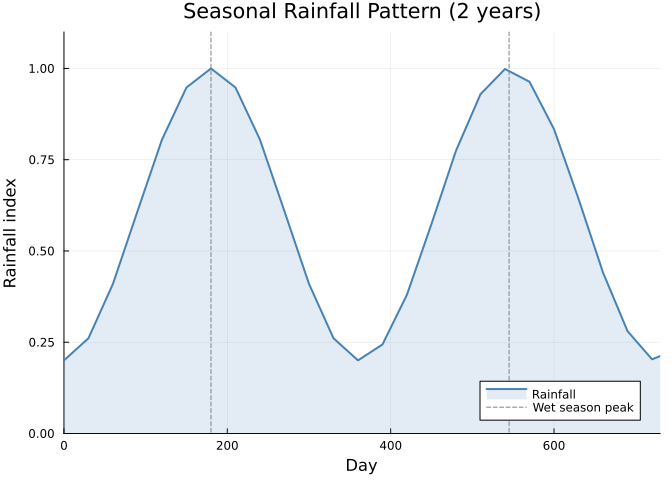
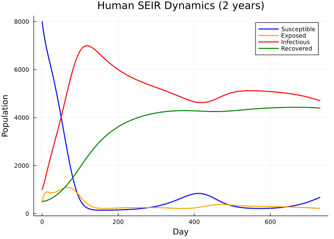
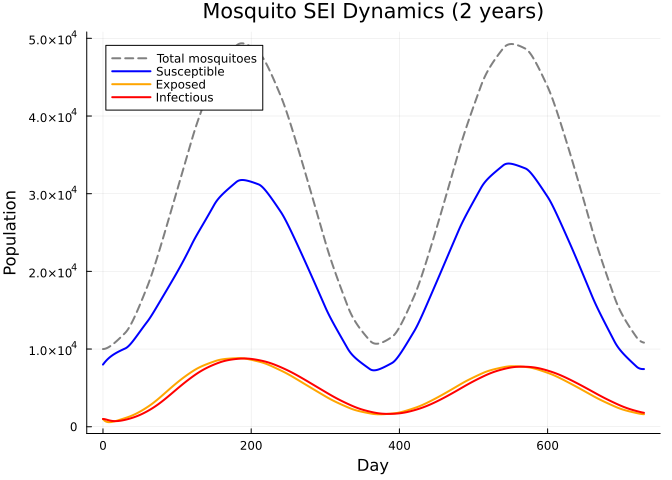
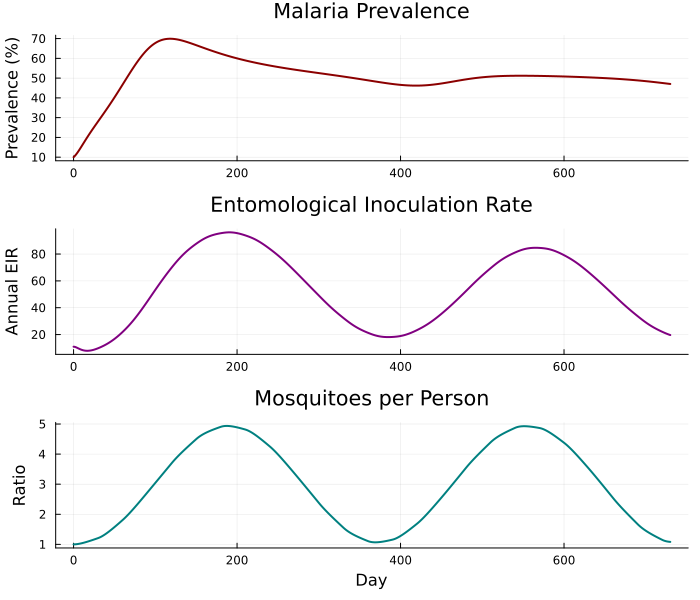
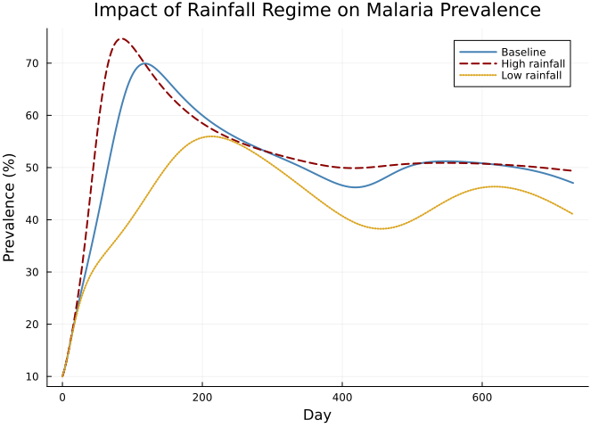
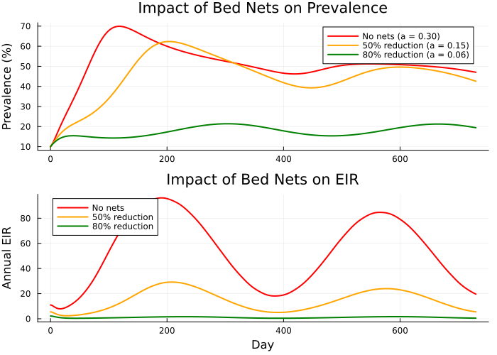

Vector-Borne Disease Dynamics
Introduction
Vector-borne diseases such as malaria, dengue, and Zika are transmitted between humans and insect vectors — typically mosquitoes. Modelling these systems requires coupling the dynamics of at least two species, often with environmental forcing that drives vector population size.
This vignette builds a simplified Ross-Macdonald model for malaria transmission, inspired by the malariasimple package. It demonstrates:
- Coupled human SEIR and mosquito SEI compartments
- Seasonal rainfall driving mosquito carrying capacity via interpolation
- Derived output quantities: prevalence, EIR (entomological inoculation rate), and mosquito-to-human ratio
- Parameter sensitivity: comparing rainfall scenarios and bed net interventions
using Odin
using PlotsModel Description
Human compartments follow an SEIR structure with waning immunity, so that recovered individuals gradually return to the susceptible pool — a key feature of malaria epidemiology:
\[\begin{aligned} \frac{dS_h}{dt} &= \mu_h N_h + \omega_h R_h - \lambda_h S_h - \mu_h S_h \\ \frac{dE_h}{dt} &= \lambda_h S_h - \sigma_h E_h - \mu_h E_h \\ \frac{dI_h}{dt} &= \sigma_h E_h - \gamma_h I_h - \mu_h I_h \\ \frac{dR_h}{dt} &= \gamma_h I_h - \omega_h R_h - \mu_h R_h \end{aligned}\]
Mosquito compartments follow an SEI structure — mosquitoes do not recover from infection and have rapid demographic turnover (~10-day lifespan):
\[\begin{aligned} \frac{dS_m}{dt} &= \mu_m K_m(t) - \lambda_m S_m - \mu_m S_m \\ \frac{dE_m}{dt} &= \lambda_m S_m - \sigma_m E_m - \mu_m E_m \\ \frac{dI_m}{dt} &= \sigma_m E_m - \mu_m I_m \end{aligned}\]
The two populations are coupled by bidirectional forces of infection:
\[\lambda_h = a \cdot b \cdot I_m / N_h\]
— mosquito-to-human transmission\[\lambda_m = a \cdot c \cdot I_h / N_h\]
— human-to-mosquito transmission
where $a$ is the mosquito biting rate, $b$ the probability a bite from an infectious mosquito infects a human, and $c$ the probability a bite on an infectious human infects the mosquito.
Mosquito carrying capacity tracks seasonal rainfall: $K_m(t) = K_{m,\text{base}} \times \text{rainfall}(t)$.
Model Definition
gen = @odin begin
# Human SEIR dynamics (with waning immunity)
deriv(S_h) = mu_h * N_h + omega_h * R_h - lambda_h * S_h - mu_h * S_h
deriv(E_h) = lambda_h * S_h - sigma_h * E_h - mu_h * E_h
deriv(I_h) = sigma_h * E_h - gamma_h * I_h - mu_h * I_h
deriv(R_h) = gamma_h * I_h - omega_h * R_h - mu_h * R_h
# Mosquito SEI dynamics (no recovery)
deriv(S_m) = birth_m - lambda_m * S_m - mu_m * S_m
deriv(E_m) = lambda_m * S_m - sigma_m * E_m - mu_m * E_m
deriv(I_m) = sigma_m * E_m - mu_m * I_m
# Bidirectional forces of infection
lambda_h = a * b * I_m / N_h
lambda_m = a * c * I_h / N_h
# Mosquito population regulation via rainfall
K_m = K_m_base * rain
birth_m = mu_m * K_m
rain = interpolate(rain_t, rain_v, :linear)
# Derived outputs
output(prevalence) = I_h / N_h
output(EIR) = a * I_m / N_h * 365
output(mosquito_ratio) = (S_m + E_m + I_m) / N_h
# Initial conditions
initial(S_h) = N_h - E_h0 - I_h0 - R_h0
initial(E_h) = E_h0
initial(I_h) = I_h0
initial(R_h) = R_h0
initial(S_m) = S_m0
initial(E_m) = E_m0
initial(I_m) = I_m0
# Human parameters
N_h = parameter(10000)
mu_h = parameter(3.91e-5) # ~1/(70*365): human mortality rate
sigma_h = parameter(0.0833) # 1/12: latent period (days)
gamma_h = parameter(0.005) # 1/200: recovery rate
omega_h = parameter(0.00556) # 1/180: immunity waning rate
# Transmission parameters
a = parameter(0.3) # biting rate (bites/mosquito/day)
b = parameter(0.5) # transmission prob: mosquito → human
c = parameter(0.3) # transmission prob: human → mosquito
# Mosquito parameters
mu_m = parameter(0.1) # 1/10: mosquito mortality (10-day lifespan)
sigma_m = parameter(0.1) # 1/10: mosquito latent period
K_m_base = parameter(50000) # base carrying capacity
# Initial condition parameters
E_h0 = parameter(500)
I_h0 = parameter(1000)
R_h0 = parameter(500)
S_m0 = parameter(8000)
E_m0 = parameter(1000)
I_m0 = parameter(1000)
# Rainfall interpolation arrays
rain_t = parameter(rank = 1)
rain_v = parameter(rank = 1)
endOdin.DustSystemGenerator{var"##OdinModel#277"}(var"##OdinModel#277"(7, [:S_h, :E_h, :I_h, :R_h, :S_m, :E_m, :I_m], [:N_h, :mu_h, :sigma_h, :gamma_h, :omega_h, :a, :b, :c, :mu_m, :sigma_m, :K_m_base, :E_h0, :I_h0, :R_h0, :S_m0, :E_m0, :I_m0, :rain_t, :rain_v], true, false, false, true, true, Dict{Symbol, Array}()))Seasonal Rainfall
Rainfall follows a sinusoidal annual cycle peaking mid-year (the wet season), with values ranging from 0.2 (dry) to 1.0 (peak wet). This drives mosquito carrying capacity and therefore transmission intensity.
rain_times = collect(0.0:30.0:750.0)
rain_values = [0.6 + 0.4 * cos(2π * (t - 180) / 365) for t in rain_times]
plot(rain_times, rain_values, lw=2, color=:steelblue,
fill=(0, 0.15, :steelblue),
xlabel="Day", ylabel="Rainfall index",
title="Seasonal Rainfall Pattern (2 years)", label="Rainfall",
xlims=(0, 730), ylims=(0, 1.1))
vline!([180, 545], ls=:dash, color=:gray, label="Wet season peak")
Simulation
We run a 2-year simulation starting from the dry season. The initial conditions place most humans as susceptible with ~10% prevalence, and the mosquito population at the dry-season carrying capacity ($K_m(0) \approx 10{,}000$).
pars = (
N_h = 10000.0,
mu_h = 1.0 / (70 * 365),
sigma_h = 1.0 / 12,
gamma_h = 1.0 / 200,
omega_h = 1.0 / 180,
a = 0.3,
b = 0.5,
c = 0.3,
mu_m = 0.1,
sigma_m = 0.1,
K_m_base = 50000.0,
E_h0 = 500.0,
I_h0 = 1000.0,
R_h0 = 500.0,
S_m0 = 8000.0,
E_m0 = 1000.0,
I_m0 = 1000.0,
rain_t = rain_times,
rain_v = rain_values,
)
sys = System(gen, pars; dt = 0.5)
reset!(sys)
times = collect(0.0:1.0:730.0)
result = simulate(sys, times)10×1×731 Array{Float64, 3}:
[:, :, 1] =
8000.0
500.0
1000.0
500.0
8000.0
1000.0
1000.0
0.1
10.95
1.0
[:, :, 2] =
7883.971179793829
574.0601353131215
1039.675659445136
502.29302544791256
8126.539240753577
885.8448128965779
994.2649993778784
0.1039675659445136
10.88720174318777
1.0006649053028034
[:, :, 3] =
7770.915061598834
639.3543044193484
1084.9452776383473
504.7853563434709
8246.587573035058
796.2549137753462
979.4363951411751
0.10849452776383472
10.724828526795868
1.002227888195158
;;; …
[:, :, 729] =
661.1236293797857
223.92374491490096
4714.641883314689
4400.3107423906185
7424.770688827967
1628.6601792885735
1831.9940811532617
0.4714641883314689
20.060335188628212
1.0885424949269802
[:, :, 730] =
667.773170901993
223.43433411771412
4709.536751975321
4399.2557430049665
7421.609560331898
1618.736032628335
1812.1523215044797
0.47095367519753206
19.843067920474052
1.0852497914464714
[:, :, 731] =
674.4293539307051
222.97181754873492
4704.417689108224
4398.181139412329
7423.2720381805275
1610.2778192720432
1793.3259212210824
0.47044176891082246
19.636918837370853
1.0826875778673652Human Dynamics
plot(times, result[1, 1, :], label="Susceptible", lw=2, color=:blue)
plot!(times, result[2, 1, :], label="Exposed", lw=2, color=:orange)
plot!(times, result[3, 1, :], label="Infectious", lw=2, color=:red)
plot!(times, result[4, 1, :], label="Recovered", lw=2, color=:green)
xlabel!("Day")
ylabel!("Population")
title!("Human SEIR Dynamics (2 years)")
Mosquito Dynamics
The mosquito population tracks the seasonal carrying capacity with a short lag (~10 days, set by $1/\mu_m$):
total_m = result[5, 1, :] .+ result[6, 1, :] .+ result[7, 1, :]
plot(times, total_m, label="Total mosquitoes", lw=2, color=:gray, ls=:dash)
plot!(times, result[5, 1, :], label="Susceptible", lw=2, color=:blue)
plot!(times, result[6, 1, :], label="Exposed", lw=2, color=:orange)
plot!(times, result[7, 1, :], label="Infectious", lw=2, color=:red)
xlabel!("Day")
ylabel!("Population")
title!("Mosquito SEI Dynamics (2 years)")
Derived Outputs
The model computes three key epidemiological indicators as output variables, stored in rows 8–10 of the result array (after the 7 state variables):
- Prevalence — fraction of humans currently infectious
- EIR — entomological inoculation rate (infectious bites per person per year)
- Mosquito ratio — total mosquitoes per human
l = @layout [a; b; c]
p1 = plot(times, result[8, 1, :] .* 100, lw=2, color=:darkred,
ylabel="Prevalence (%)", label=nothing,
title="Malaria Prevalence")
p2 = plot(times, result[9, 1, :], lw=2, color=:purple,
ylabel="Annual EIR", label=nothing,
title="Entomological Inoculation Rate")
p3 = plot(times, result[10, 1, :], lw=2, color=:teal,
xlabel="Day", ylabel="Ratio", label=nothing,
title="Mosquitoes per Person")
plot(p1, p2, p3, layout=l, size=(700, 600))
Prevalence peaks lag behind the mosquito density peak due to the latent periods in both humans (12 days) and mosquitoes (10 days).
Scenario Comparison: Rainfall Intensity
We compare three rainfall regimes to illustrate how vector ecology shapes transmission:
- Baseline: seasonal range 0.2–1.0, $K_{m,\text{base}} = 50{,}000$
- High rainfall: range 0.4–1.0, $K_{m,\text{base}} = 80{,}000$ (wetter tropics)
- Low rainfall: range 0.15–0.45, $K_{m,\text{base}} = 20{,}000$ (semi-arid)
rain_high = [0.7 + 0.3 * cos(2π * (t - 180) / 365) for t in rain_times]
rain_low = [0.3 + 0.15 * cos(2π * (t - 180) / 365) for t in rain_times]
pars_high = merge(pars, (K_m_base = 80000.0, rain_v = rain_high))
sys_h = System(gen, pars_high; dt = 0.5)
reset!(sys_h)
res_high = simulate(sys_h, times)
pars_low = merge(pars, (K_m_base = 20000.0, rain_v = rain_low))
sys_l = System(gen, pars_low; dt = 0.5)
reset!(sys_l)
res_low = simulate(sys_l, times)
plot(times, result[8, 1, :] .* 100, label="Baseline", lw=2, color=:steelblue)
plot!(times, res_high[8, 1, :] .* 100, label="High rainfall", lw=2,
color=:darkred, ls=:dash)
plot!(times, res_low[8, 1, :] .* 100, label="Low rainfall", lw=2,
color=:goldenrod, ls=:dot)
xlabel!("Day")
ylabel!("Prevalence (%)")
title!("Impact of Rainfall Regime on Malaria Prevalence")
Higher rainfall sustains larger mosquito populations, driving substantially higher transmission intensity. The non-linear relationship between mosquito density and prevalence is characteristic of Ross-Macdonald dynamics.
Intervention: Bed Nets
Insecticide-treated bed nets (ITNs) reduce the effective mosquito biting rate $a$. Since biting rate appears in both directions of transmission, even a moderate reduction has a large effect. We compare:
- No intervention ($a = 0.30$)
- 50% biting reduction ($a = 0.15$)
- 80% biting reduction ($a = 0.06$)
pars_net50 = merge(pars, (a = 0.15,))
sys_n50 = System(gen, pars_net50; dt = 0.5)
reset!(sys_n50)
res_net50 = simulate(sys_n50, times)
pars_net80 = merge(pars, (a = 0.06,))
sys_n80 = System(gen, pars_net80; dt = 0.5)
reset!(sys_n80)
res_net80 = simulate(sys_n80, times)
p1 = plot(times, result[8, 1, :] .* 100,
label="No nets (a = 0.30)", lw=2, color=:red)
plot!(p1, times, res_net50[8, 1, :] .* 100,
label="50% reduction (a = 0.15)", lw=2, color=:orange)
plot!(p1, times, res_net80[8, 1, :] .* 100,
label="80% reduction (a = 0.06)", lw=2, color=:green)
ylabel!(p1, "Prevalence (%)")
title!(p1, "Impact of Bed Nets on Prevalence")
p2 = plot(times, result[9, 1, :], label="No nets", lw=2, color=:red)
plot!(p2, times, res_net50[9, 1, :], label="50% reduction", lw=2, color=:orange)
plot!(p2, times, res_net80[9, 1, :], label="80% reduction", lw=2, color=:green)
xlabel!(p2, "Day")
ylabel!(p2, "Annual EIR")
title!(p2, "Impact of Bed Nets on EIR")
plot(p1, p2, layout=(2, 1), size=(700, 500))
The biting rate enters the force of infection quadratically (once for mosquito→human, once for human→mosquito), so interventions that reduce biting are particularly effective — an 80% reduction in biting rate can nearly eliminate transmission.
Summary
| Feature | Syntax |
|---|---|
| Coupled ODE system | deriv(S_h) = ..., deriv(S_m) = ... |
| Interpolated forcing | rain = interpolate(rain_t, rain_v, :linear) |
| Derived outputs | output(prevalence) = I_h / N_h |
| Parameter arrays | rain_t = parameter(rank = 1) |
This vignette demonstrated how Odin.jl handles multi-species ODE systems with environmental forcing via interpolation. The Ross-Macdonald framework extends naturally to other vector-borne diseases (dengue, Zika, leishmaniasis) by adjusting the compartment structure and transmission parameters.